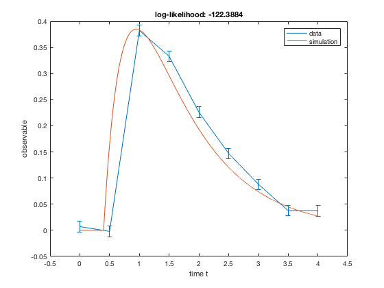
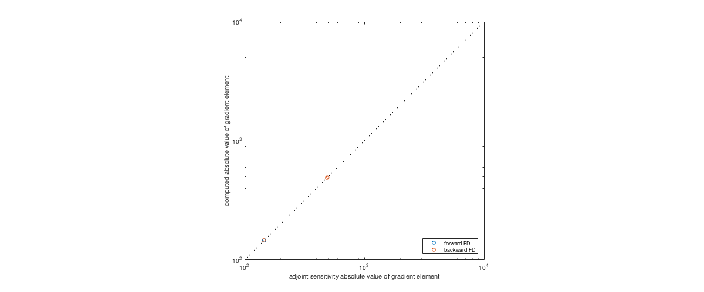

function [model] = model_dirac_adjoint_syms()
STATES
syms x1 x2
model.sym.x = [ x1 x2 ];
PARAMETERS ( for these sensitivities will be computed )
syms p1 p2 p3 p4
model.sym.p = [p1,p2,p3,p4];
model.param = 'log10';
SYSTEM EQUATIONS
syms t
model.sym.xdot = sym(zeros(size(model.sym.x)));
model.sym.xdot(1) = -p1*x1 + dirac(t-p2);
model.sym.xdot(2) = p3*x1 - p4*x2 ;
INITIAL CONDITIONS
model.sym.x0 = sym(zeros(size(model.sym.x)));
model.sym.x0(1) = 0;
model.sym.x0(2) = 0;
OBSERVALES
model.sym.y = sym(zeros(1,1));
model.sym.y(1) = x2;
end
ans =
sym: [1x1 struct]
param: 'log10'
function example_dirac_adjoint()
COMPILATION
[exdir,~,~]=fileparts(which('example_dirac_adjoint.m'));
amiwrap('model_dirac_adjoint','model_dirac_adjoint_syms',exdir)
Generating model struct ...
Parsing model struct ...
Generating C code ...
headers | wrapfunctions | Compiling mex file ...
amici | Building with 'Xcode with Clang'.
MEX completed successfully.
Building with 'Xcode with Clang'.
MEX completed successfully.
SIMULATION
tout = linspace(0,4,9);
tfine = linspace(0,4,10001);
p = [1;0.4;2;3];
k = [];
D.Y = [ 0.00714742903826096
-0.00204966058299775
0.382159034587845
0.33298932672138
0.226111476113441
0.147028440865854
0.0882468698791813
0.0375887796628869
0.0373422340295005];
D.Sigma_Y = 0.01*ones(size(D.Y));
options.sensi = 1;
options.sensi_meth = 'adjoint';
options.maxsteps = 1e5;
sol = simulate_model_dirac_adjoint(tout,log10(p),k,D,options);
options.sensi = 0;
solfine = simulate_model_dirac_adjoint(tfine,log10(p),k,[],options);
figure
errorbar(tout,D.Y,D.Sigma_Y)
hold on
plot(tfine,solfine.y)
legend('data','simulation')
xlabel('time t')
ylabel('observable')
title(['log-likelihood: ' num2str(sol.llh) ])

FD
eps = 1e-4;
xi = log10(p);
grad_fd_f = NaN(4,1);
grad_fd_b = NaN(4,1);
for ip = 1:4;
options.sensi = 0;
xip = xi;
xip(ip) = xip(ip) + eps;
solpf = simulate_model_dirac_adjoint(tout,xip,k,D,options);
grad_fd_f(ip,1) = (solpf.llh-sol.llh)/eps;
xip = xi;
xip(ip) = xip(ip) - eps;
solpb = simulate_model_dirac_adjoint(tout,xip,k,D,options);
grad_fd_b(ip,1) = -(solpb.llh-sol.llh)/eps;
end
figure
plot(abs(grad_fd_f),abs(sol.sllh),'o')
hold on
plot(abs(grad_fd_b),abs(sol.sllh),'o')
set(gca,'XScale','log')
set(gca,'YScale','log')
hold on
axis square
plot([1e2,1e4],[1e2,1e4],'k:')
xlim([1e2,1e4])
ylim([1e2,1e4])
legend('forward FD','backward FD','Location','SouthEast')
xlabel('adjoint sensitivity absolute value of gradient element')
ylabel('computed absolute value of gradient element')
set(gcf,'Position',[100 300 1200 500])
drawnow

end